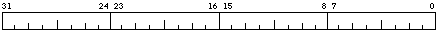

These registers are accessed using the mtpr and mfpr instructions.

A VAX process has four stacks. The stack pointer to be used is determined by bits 23 and 24, the current mode bits (CMD), and bit 25, the interrupt stack bit (IS), of the processor status long word (PSL). The IS bit of the PSL is set when the processor aborts, faults, traps or interrupts through a System Control Block (SCB) vector which has the low 2 bits set to 01. The CMD field of the PSL is set to 0 on an abort, fault, trap or interrupt. The IS bit of the PSL is cleared when a new PSL with the IS bit clear, is load by a rei instruction.